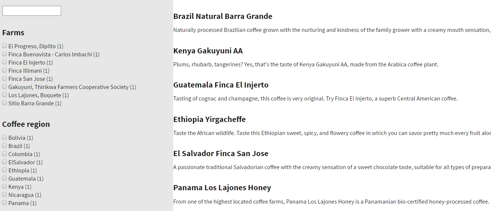

Integrating Azure Search into pages
Kentico does not provide any built-in components for searching through Azure Search indexes and displaying results on your website's pages.
To allow visitors to search your website using Azure Search, you need to develop and maintain custom components. This way, you can create a search solution that best matches the implementation of your website and your search requirements. You have full control over the output of your search results and other interface elements, and the flexibility to use the wide range of Azure Search features.
Interact with your Azure Search indexes using the Azure Search .NET SDK (provided via the Microsoft.Azure.Search NuGet package). For typical search solutions, the development process consists of the following general steps:
Create interface elements that collect input from users
Prepare full-text search queries and apply filters (based on the user input)
Search for matching documents in your index
Process the response to display search results, faceted navigation, etc.
To get a deeper understanding of how search queries work in Azure Search, refer to the How full text search works in Azure Search article.
Example
The following example demonstrates how to develop a basic search interface that uses an Azure Search index. The example works with the data of coffee products from the Dancing Goat sample site, and provides the following:
An input for search text
Faceted navigation for filtering based on coffee farms and regions
Search results containing the names and descriptions of matching coffee products
Start by creating an Azure Search index for the store content of the Dancing Goat sample site:
Open the Smart search application.
On the Azure indexes tab, click New index.
Fill in the index properties:
Display name: DG store
Code name: dg-store
Index type: Pages
Service name: the name of your Azure Search service
Admin key: a valid admin key for your Azure Search service
Query key: a valid query key for your Azure Search service
To learn more about managing Azure Search services, refer to the Create an Azure Search service in the portal article.
Click Save.
Make sure the index is assigned to the Dancing Goat sample site on the Sites tab.
Switch to the Cultures tab, and add at least one culture to the index (for example English - United States).
Open the Indexed content tab and click Add allowed content.
Set the Path value to: /Store/%
Click Save.
Note: The index includes all product and page types under the website's /Store section, even though the search interface in this example only works with coffee products. When creating your own search implementations, you can use a single broad index with multiple specialized search components that work with different types of data.
Configure the search field settings required for the scenario:
Open the Modules application in Kentico.
Edit the E-commerce module.
Select the Classes tab, edit the SKU class.
Open the Search tab and click Customize.
Enable the following search field options in the Azure section of the grid:
SKUName – Content, Retrievable, Searchable
SKUDescription – Content, Searchable
SKUShortDescription – Content, Retrievable, Searchable
NodeAliasPath – Searchable
Click Save.
Open the Page types application.
Edit the Coffee (Dancing Goat) page type.
Select the Search fields tab.
Enable the following search field options in the Azure section of the grid:
CoffeeCountry – Content, Searchable, Facetable, Filterable
CoffeeFarm – Content, Searchable, Facetable, Filterable
Click Save.
Open the Smart search application and Rebuild the DG store index (on the Azure indexes tab).
Next you need to create components that provide a search interface with faceted navigation, perform the search requests, and display search results.
In this example, all interface elements and functions are implemented within a single custom web part.
When developing your own search solutions, you can separate the logic into any number of components according to the specifics of your website and your search requirements.
Open your Kentico solution in Visual Studio.
Right-click the Kentico web project (CMS or CMSApp) and select Add -> Reference.
Open the Assemblies -> Framework tab in the Reference manager dialog, select the System.Net.Http assembly and click OK.
Expand the CMSWebParts/SmartSearch folder and add a new Web User Control named AzureSearch.ascx.
Copy the following markup into the AzureSearch.ascx file (below the @ Control directive):
<divclass="product-page row"><divclass="col-md-4 col-lg-3 product-filter"><asp:TextBoxrunat="server"ID="searchBox"CssClass="search-box"/><h4>Farms</h4><asp:CheckBoxListrunat="server"ID="filterFarm"Visible="true"CssClass="ContentCheckBoxList"AutoPostBack="True"/><h4>Coffee region</h4><asp:CheckBoxListrunat="server"ID="filterCountry"Visible="true"CssClass="ContentCheckBoxList"AutoPostBack="True"/></div><divclass="col-md-8 col-lg-9 product-list"><asp:Labelrunat="server"ID="lblSearchResults"Visible="true"/></div></div>Note: The CSS classes used in the example work with the default stylesheets of the Dancing Goat sample site.
Copy the following code into the control's code behind (AzureSearch.ascx.cs):
usingSystem;usingSystem.Collections.Generic;usingSystem.Linq;usingSystem.Text;usingSystem.Web.UI.WebControls;usingCMS.Base.Web.UI;usingCMS.Search;usingCMS.Search.Azure;usingCMS.PortalEngine.Web.UI;usingMicrosoft.Azure.Search;usingMicrosoft.Azure.Search.Models;publicpartialclassCMSWebParts_SmartSearch_AzureSearch : CMSAbstractWebPart{// The SearchIndexClient instance used to interact with the specified Azure Search indexprivateISearchIndexClient searchIndexClient = InitializeIndex("dg-store");// The fields used for faceted navigationprivateconststringFACET_COFFEE_COUNTRY ="coffeecountry";privateconststringFACET_COFFEE_FARM ="coffeefarm";publicreadonlyList<string> Facets =newList<string>{FACET_COFFEE_COUNTRY,FACET_COFFEE_FARM};/// <summary>/// Returns an initialized SearchServiceClient instance based on the specified index code name./// </summary>privatestaticISearchIndexClient InitializeIndex(stringindexName){// Converts the Kentico index code name to a valid Azure Search index name (if necessary)indexName = NamingHelper.GetValidIndexName(indexName);SearchIndexInfo index = SearchIndexInfoProvider.GetSearchIndexInfo(indexName);SearchServiceClient client =newSearchServiceClient(index.IndexSearchServiceName,newSearchCredentials(index.IndexQueryKey));returnclient.Indexes.GetClient(indexName);}protectedvoidPage_Load(objectsender, EventArgs e){// Prepares a list of filter queries for the search requestvarfilterQueries=newList<string>(){// Filters the search results to display only pages (products) of the 'dancinggoat.coffee' type"classname eq 'dancinggoat.coffee'"};// Adds filter queries based on the selected options in the faceted navigation (coffee farm and region)varselectedCountries = filterCountry.GetSelectedItems();varselectedFarms = filterFarm.GetSelectedItems();if(selectedCountries.Any()){filterQueries.Add(GetFilterQuery(selectedCountries, FACET_COFFEE_COUNTRY));}if(selectedFarms.Any()){filterQueries.Add(GetFilterQuery(selectedFarms, FACET_COFFEE_FARM));}// Prepares the search parametersvarsearchParams =newMicrosoft.Azure.Search.Models.SearchParameters{Facets = Facets,Filter = String.Join(" and ", filterQueries),HighlightPreTag ="<strong>",HighlightPostTag ="</strong>",// All fields used for text highlighting must be configured as 'searchable'HighlightFields =newList<string>{FACET_COFFEE_COUNTRY,FACET_COFFEE_FARM,"nodealiaspath","skudescription","skuname"}};// Gets the search text from the inputstringsearchString = searchBox.Text;// Performs the search request for the specified Azure Search index and parametersDocumentSearchResult result = searchIndexClient.Documents.Search(searchString, searchParams);// Fills or updates the faceted navigation optionsif(result.Facets !=null){if(!IsPostBack){foreach(varresultFacetinresult.Facets){foreach(FacetResult valueinresultFacet.Value){AddItemToCheckBoxList(value, resultFacet.Key);}}}else{foreach(ListItem iteminfilterCountry.Items){UpdateCountListItem(result.Facets[FACET_COFFEE_COUNTRY], item);}foreach(ListItem iteminfilterFarm.Items){UpdateCountListItem(result.Facets[FACET_COFFEE_FARM], item);}}}// Displays the search resultsGenerateResultView(result);}/// <summary>/// Builds a filter query based on selected faceted navigation options./// </summary>privatestringGetFilterQuery(IEnumerable<ListItem> selectedItems,stringcolumn){varqueries = selectedItems.Select(item => $"{column} eq '{item.Value.Replace("'", "''")}'");return$"({String.Join("or", queries)})";}/// <summary>/// Adds a retrieved FacetResult to the 'listItem' filtering options./// </summary>privatevoidAddItemToCheckBoxList(FacetResult facetResult,stringresultFacetKey){varitem =newListItem($"{facetResult.Value} ({facetResult.Count})", facetResult.Value.ToString());switch(resultFacetKey){caseFACET_COFFEE_COUNTRY:filterCountry.Items.Add(item);break;caseFACET_COFFEE_FARM:filterFarm.Items.Add(item);break;default:break;}}/// <summary>/// Updates the counts of matching results for the 'listItem' filtering options according to the retrieved facet data./// </summary>privatestaticvoidUpdateCountListItem(IEnumerable<FacetResult> facetResults, ListItem listItem){long? count = 0;foreach(varitemsinfacetResults){if(items.Value.Equals(listItem.Value)){count = items.Count;break;}}listItem.Text = $"{listItem.Value} ({count})";}/// <summary>/// Displays the search results filtered according to the selected parameters./// </summary>privatevoidGenerateResultView(DocumentSearchResult searchResult){if(searchResult.Results.Count == 0){lblSearchResults.Text ="No search results found.";return;}varresultText =newStringBuilder();foreach(SearchResult resultinsearchResult.Results){stringresultItemName = $"<div><h4>{result.Document["skuname"]}</h4>";stringresultItemDescription = $"<p>{result.Document["skushortdescription"]}</p>";// Displays the 'skushortdescription' field's value for result items without highlights matching the search textif(result.Highlights ==null){resultText.Append($"{resultItemName}{resultItemDescription}</div>");}// Displays highlights matching the search text from the 'HighlightFields' specified in the SearchParameterselse{stringhighlightValues = String.Join("<br />", result.Highlights?.Values.Select(value => String.Join(" || ", value)));resultText.Append($"{resultItemName}{highlightValues}</div>");}}lblSearchResults.Text = resultText.ToString();}}Save the new files (if you have a web application installation, build the CMSApp project).
Continue by registering the new control as a custom web part:
Open the Web parts application in Kentico.
Select the Full-text search -> Smart search category.
Click New web part and fill in the following values:
Web part: Create a new
Display name: Azure Search
Code files: Use existing file
File path: SmartSearch/AzureSearch.ascx
Click Save.
Note: The example only uses a basic web part without any properties. In your own implementations, you can provide configuration options by defining web part properties (for example for the search index name).
You can now place the custom Azure Search web part onto a page on the Dancing Goat sample site. The web part provides a search interface that works with the content of the defined Azure Search index.

The sample web part displaying search results and faceted navigation options
Logging internal search activities and web analytics
By default, Kentico on-line marketing features cannot track search actions that occur through custom Azure Search components. This includes logging of the Internal search activity for contacts and the On-site search key words web analytics.
If you wish to use the search tracking features together with Azure Search, you need to manually perform the required logging in the code of your custom search components.
using System;using CMS.DocumentEngine;using CMS.Localization;using CMS.SiteProvider;using CMS.WebAnalytics;...// Performs on-line marketing logging only if search text is specifiedif (!String.IsNullOrWhiteSpace(searchString)){ // Logs the 'Internal search' activity for the current contact PagesActivityLogger activityLogger = new PagesActivityLogger(); activityLogger.LogInternalSearch(searchString); // Logs a hit for the 'On-site search keywords' web analytics AnalyticsHelper.LogOnSiteSearchKeywords(SiteContext.CurrentSiteName, DocumentContext.CurrentAliasPath, LocalizationContext.CurrentCulture.CultureCode, searchString, 0, 1);}Tip: To ensure that the logging only occurs for valid search requests, add the code after you call the ISearchIndexClient.Documents.Search method.